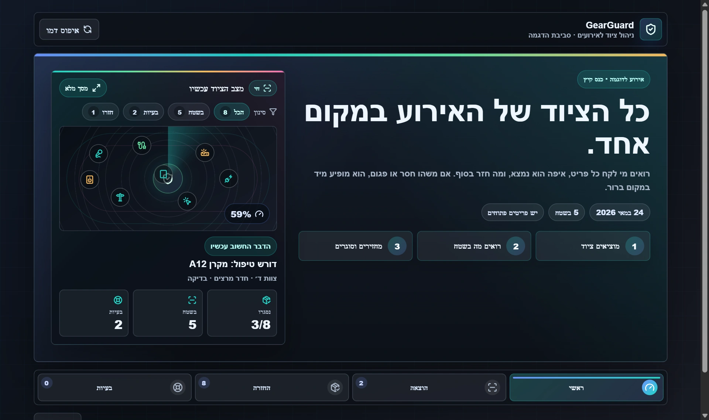

ניהול ציוד · הדגמה מקומית
GearGuard
עקבו אחרי פריט ציוד שיוצא מהמחסן לשטח וחוזר ממנו.
- הוצאת ציוד והחזרתו מעדכנות את רשימות המלאי ואת לוח המצב.
- כשפריט מסומן כחסר, אפשר לפתוח משימת איתור ולסמן אותה כבוצעה.
רכיבי GearGuard המקוריים פועלים כאן עם אירוע וצוותים לדוגמה. רענון הדף מאפס את ההתנסות.
פתיחת ההדגמה